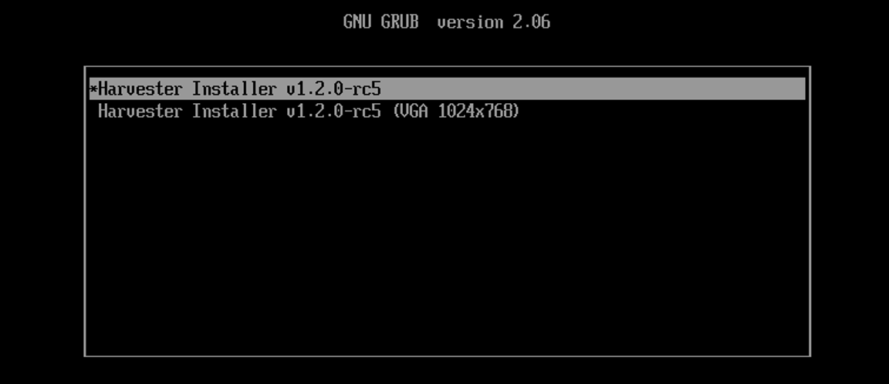
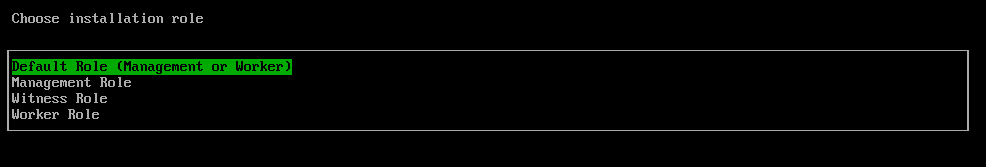
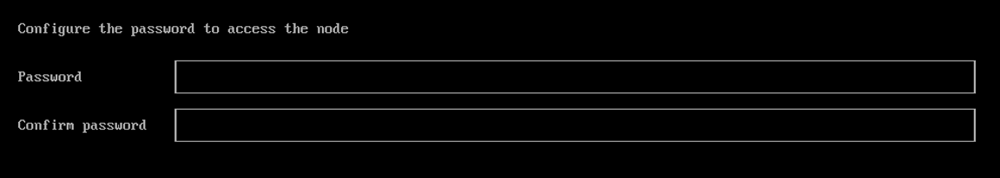
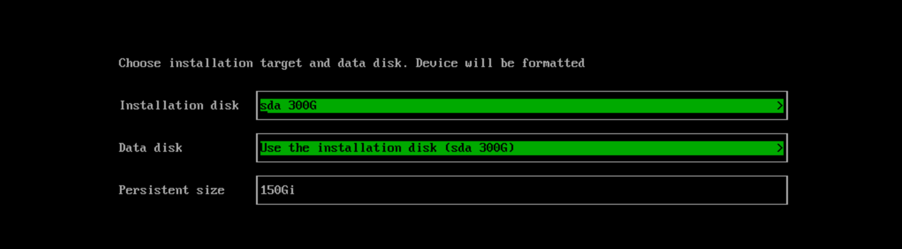
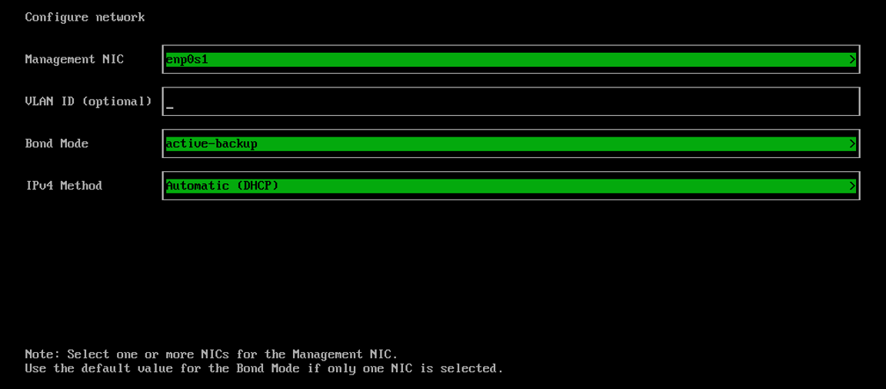
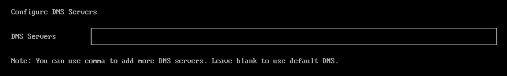
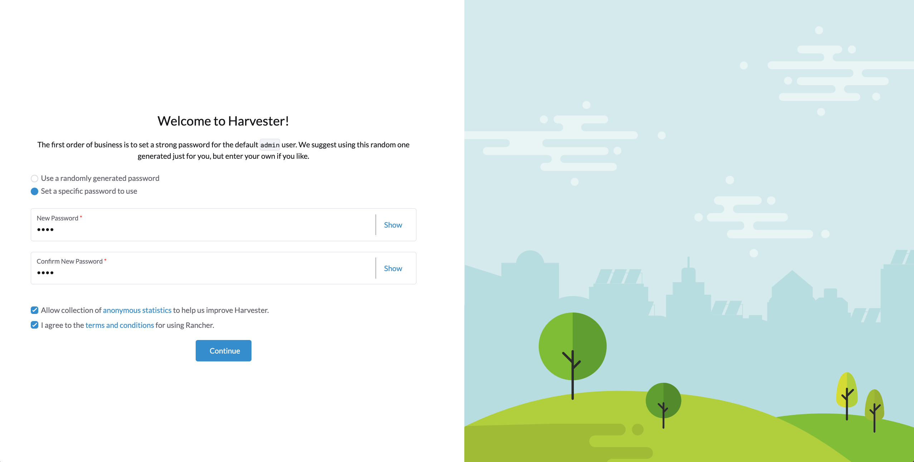

ISO 安装
安装步骤
-
挂载 ISO 文件并通过选择
Harvester Installer选项启动服务器。
安装程序会自动检查硬件，并在未满足最低要求时显示警告信息。如果所有检查都通过，则不会显示 硬件检查 屏幕。

-
使用箭头键选择安装模式。默认情况下，第一个节点将是集群的管理节点。

-
Create a new Harvester cluster: 创建一个全新的集群。 -
Join an existing Harvester cluster: 加入现有集群。您需要加入的集群的 VIP 和集群词元。 -
Install Harvester binaries only：如果选择此选项，首次启动后需要进行额外的设置。
-
-
为节点选择一个角色。如果您选择了安装模式
Join an existing Harvester cluster，则需要执行此步骤。
-
Default Role：允许节点作为管理节点或工作节点运行。此角色没有任何特定的权限或限制。 -
Management Role：当 SUSE Virtualization 提升节点为管理节点时，允许节点被优先考虑。 -
Witness Role：限制节点在特定集群中作为见证节点（仅作为etcd节点运行）。 -
Worker Role：限制节点在特定集群中作为工作节点（永远不会提升为管理节点）。
-
-
配置访问节点的密码。默认的SSH用户是
rancher。
-
选择您想要安装集群的安装磁盘和您想要存储虚拟机数据的数据磁盘。默认情况下，SUSE Virtualization 对于UEFI和BIOS使用 GUID分区表(GPT) 分区方案。如果您使用BIOS启动，则可以选择 主引导记录(MBR)。
在v1.7.0中，已弃用对传统BIOS启动的支持，并将在以后的版本中移除。使用此启动模式的现有 SUSE Virtualization 集群将继续运行，但升级到更高版本可能需要在UEFI模式下重新安装。为避免问题和中断，在新安装中使用UEFI。

-
Installation disk：用于安装集群的磁盘。 -
Data disk：用于存储虚拟机数据的磁盘。建议选择单独的磁盘来存储虚拟机数据。这不适用于见证节点。 -
Persistent size：如果您只有一个磁盘或将同一个磁盘用于操作系统和虚拟机数据，则需要配置持久分区大小以存储系统软件包和容器镜像。默认和最小持久分区大小为150 GiB。您可以指定大小，例如 200Gi 或 153600Mi。
-
-
配置节点的
HostName。
-
为管理网络配置网络接口。默认情况下，SUSE Virtualization 创建一个名为
mgmt-bo的 绑定接口，用于 内置管理集群网络，IP 地址可以通过 DHCP 配置或静态分配。
连接到绑定接口的物理交换机必须严格配置为干道端口。这些端口必须接受标记流量，并发送带有虚拟机网络使用的 VLAN ID 的标记流量。
在集群的生命周期内，无法更改节点 IP。如果使用 DHCP，您必须确保 DHCP 服务器始终为同一节点提供相同的 IP。如果节点 IP 被更改，相关节点将无法加入集群，甚至可能导致集群崩溃。
此外，配置 DHCP 服务器时，您需要添加 路由器 选项 (
option routers)。此选项用于在主机上添加默认路由。没有默认路由，节点将无法启动。例如：
Linux~ # ip route default via 192.168.122.1 dev mgmt-br proto dhcp
绑定接口的默认 MTU 值为
1500。要使用不同的 MTU 值，请按照以下步骤在 Harvester 配置文件中配置 [install.management_interface设置。有关更多信息，请参见 DHCP 服务器配置。
-
（可选）为集群 Pod 和服务配置 CIDR。
要使用默认值，请留空字段。

CIDR 值不得重叠，并且必须在 10.0.0.0/8、172.16.0.0/12 或 192.168.0.0/16 的私有 IP 地址范围内。
DNS 服务 IP 必须在 服务 CIDR 字段定义的范围内。
有效的 CIDR 配置示例：
-
Pod CIDR:172.16.0.0/16
-
服务 CIDR:172.22.0.0/16
-
集群 DNS IP:172.22.0.10
-
-
（可选）配置
DNS Servers。使用逗号作为分隔符添加更多 DNS 服务器。留空以使用默认 DNS 服务器。
-
通过选择
VIP Mode配置虚拟 IP (VIP)。此 VIP 用于访问集群或其他节点加入集群。对于配置了静态 MAC 到 IP 地址映射的 DHCP 设置，请在提供的字段中输入 MAC 地址以获取唯一的持久虚拟 IP (VIP)。否则，请留空。

-
配置
Cluster token。此词元用于将其他节点添加到集群。
-
配置
NTP servers以确保所有节点的时间同步。其默认值为0.suse.pool.ntp.org。使用逗号作为分隔符添加更多 NTP 服务器。
使用多个 NTP 服务器提供冗余、更好的准确性、容错和提高性能。它确保即使一个服务器失败或提供错误数据，时间同步仍然继续，并有助于在不同服务器之间分配负载。
-
（可选）如果您需要使用 HTTP 代理访问外部网络，请输入
Proxy address。否则，请留空。
-
（可选）您可以通过提供
HTTP URL来选择导入 SSH 密钥。例如，您的 GitHub 公共密钥https://github.com/<username>.keys可以使用。
-
（可选）如果您需要使用 配置文件 自定义主机，请在此输入
HTTP URL。
-
审核并确认您的安装选项。确认安装选项后，SUSE Virtualization 将安装到您的主机上。安装可能需要几分钟才能完成。

-
安装完成后，您的节点将重新启动。重启后，控制台将显示管理 URL 和状态。Web 界面的默认 URL 是
https://your-virtual-ip。您可以使用F12从控制台切换到 Shell，并输入exit返回控制台。在第一页选择
Install Harvester binaries only需要在第一次启动后进行额外设置。
-
首次登录时，系统会提示您为默认
admin用户设置密码。